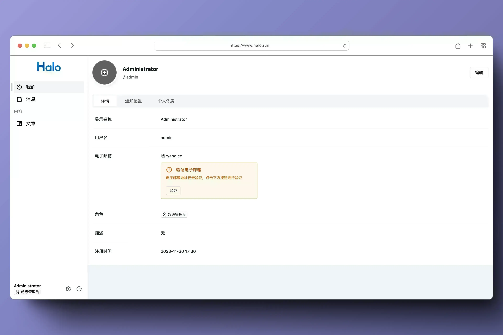
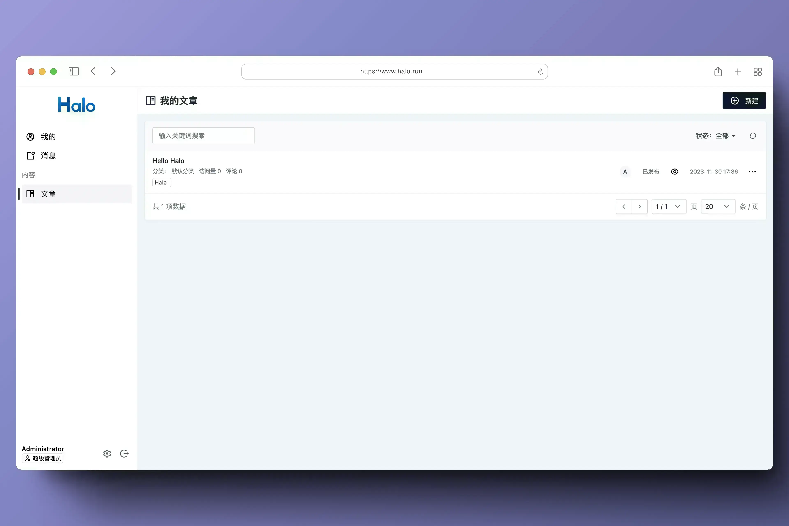
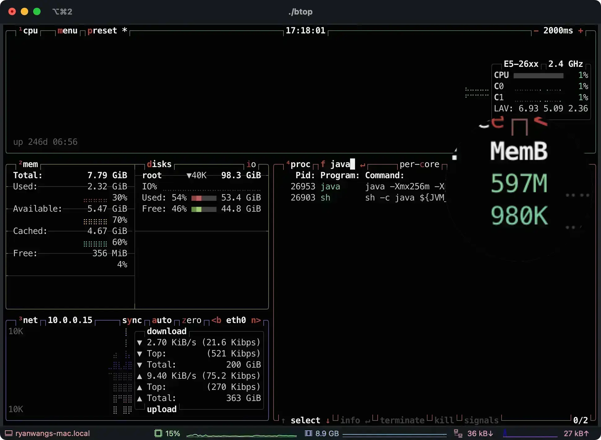
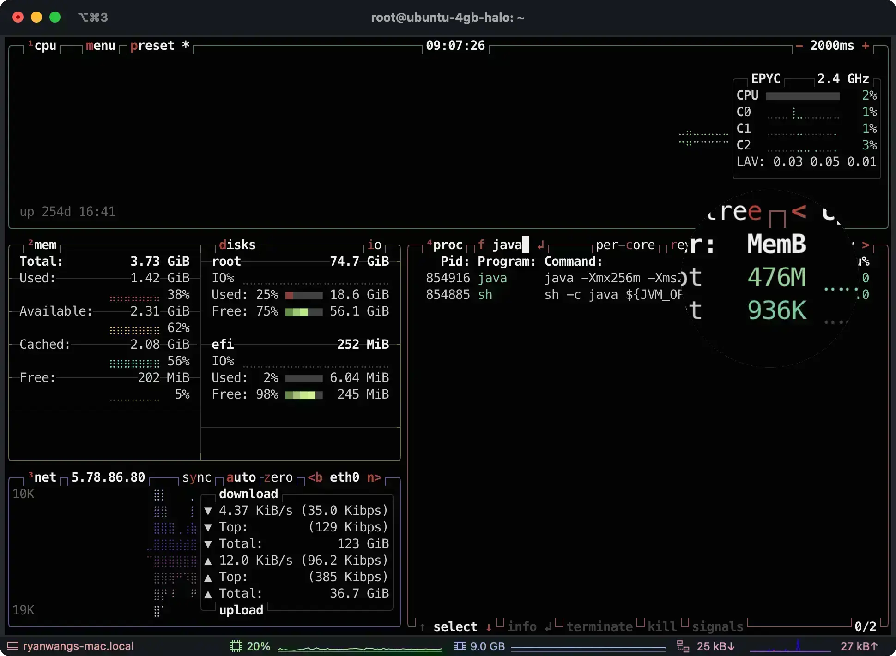
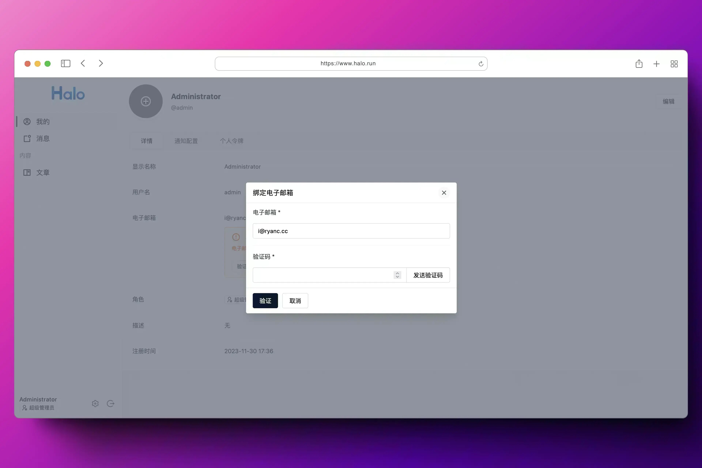
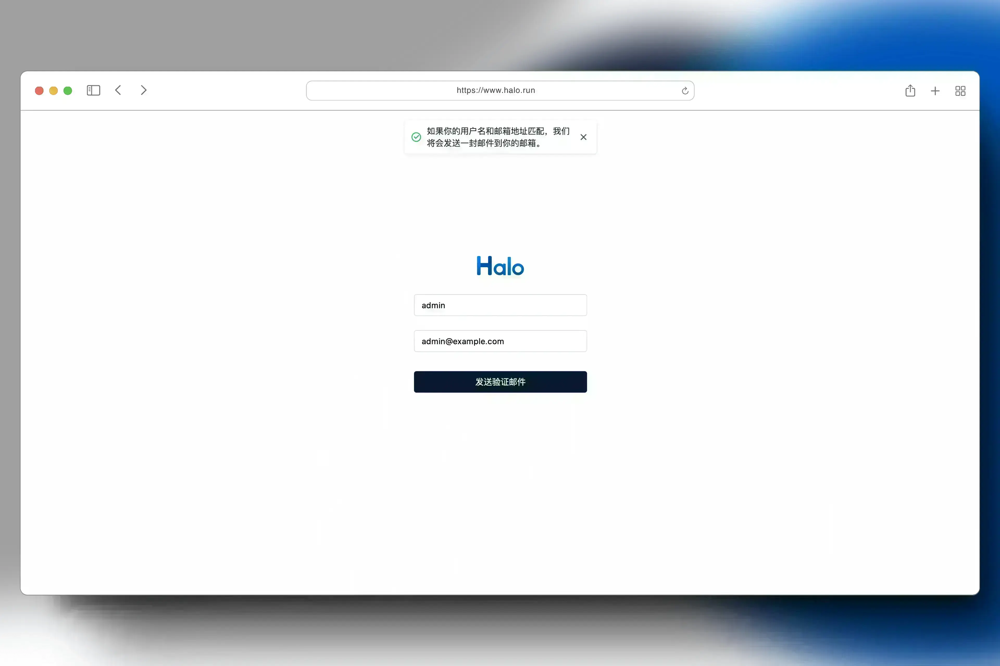
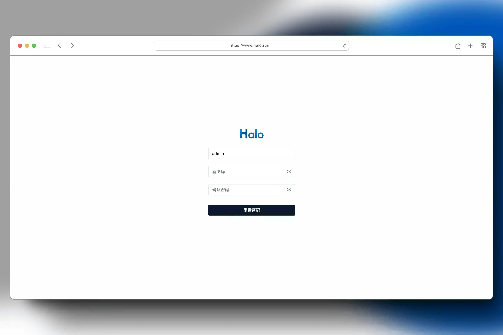

⚠️ 注意
此版本由于升级了 SpringBoot 的版本并依赖了新的 H2 Database 版本，经过我们测试无法正常从旧版本 Halo 升级。所以如果你当前正在使用 H2 作为数据库，可能需要使用系统的备份恢复功能进行重新安装。
此外，不建议在生产环境使用 H2 作为数据库。
Halo 是一款强大易用的开源建站工具，它让你无需太多的技术知识就可以快速搭建一个博客、网站或者内容管理系统。具备可插拔架构、主题套用、富文本编辑器等多重特性，支持用户根据自己的喜好选择不同类型的插件及主题模板来定制化自己的站点功能及外观。让内容创作和发布更加便捷生动。
截至目前（2023 年 Q3 季度），Halo 已经在 Docker Hub 获得了超过 170 万次下载，GitHub Star 数突破 28 k，并拥有一百多名社区贡献者。
2023 年 12 月 01 日，强大易用的开源建站工具 Halo 正式发布 2.11.0 版本。
在这个版本中，Halo 主要支持了个人中心功能，以及其他 50 多项功能优化和问题修复。
亮点更新
个人中心
此版本全新加入了个人中心功能，并将所有和用户自身有关的功能移动到了个人中心，包括基本信息设置、消息通知等。此外，个人中心还支持管理自己的文章，管理员也可以根据自身的需求选择用户是否可以管理自己的文章。
有了个人中心之后，后续还可以通过插件为网站用户扩展出更多的功能，用于满足各式各样的网站需求。
个人中心页面：

我的文章页面：

优化内存占用
在这个版本我们使用 OpenJ9 作为基础镜像，可以显著的优化内存占用，经过测试，大约可以减少 20% - 30% 的内存消耗，以下是我们演示网站的内存占用对比。
2.10 |
2.11 |
|---|---|
 |
 |
邮箱验证和密码重置
从 Halo 2.10 开始，我们支持了可配置的消息通知功能。在这个版本中，我们基于此完善了用户的邮箱验证和密码重置功能。
邮箱验证：

密码重置：


完整更新日志
新特性
文章预览支持模拟不同设备尺寸。 by @Thematrixofink in #4846
支持在个人中心管理用户自己的文章。 by @JohnNiang & @ruibaby in #4866
使用 ibm-semeru-runtimes:open-17-jre 作为基础镜像构建 Halo 镜像，以获得更优的内存消耗。 by @ruibaby & @JohnNiang in #4896
功能优化
优化 Console 端插件捆绑资源的请求，防止在操作插件状态之后无法及时更新资源。 by @ruibaby in #4804
添加 Generator 元数据标识。 by @JohnNiang in #4821
问题修复
修复因部分角色导致无法正常创建个人令牌的问题。 by @JohnNiang in #4800
修复在部分 Windows 开发者无法正常构建 Halo 的问题。 by @JohnNiang in #4844
依赖更新
升级默认编辑器版本。 by @ruibaby in #4924
解决行内块元素宽度设置不准确的问题。 by @LIlGG in halo-sigs/richtext-editor#71
升级依赖 Spring Boot 至 3.1.5。 by @JohnNiang in #4758
升级 Gradle 至 8.4。 by @JohnNiang in #4848
升级 Lombok Gradle 插件至 8.4。 by @JohnNiang in #4849
[Action Required] 升级 Spring Boot 至 3.2.0-RC2。 by @JohnNiang in #4850
升级 SpringDoc 至 2.2.1-SNAPSHOT 以解决部分 API 文档无法正常使用的问题。 by @JohnNiang in #4854
升级 Spring Boot 依赖至 3.2.0。 by @JohnNiang in #4904